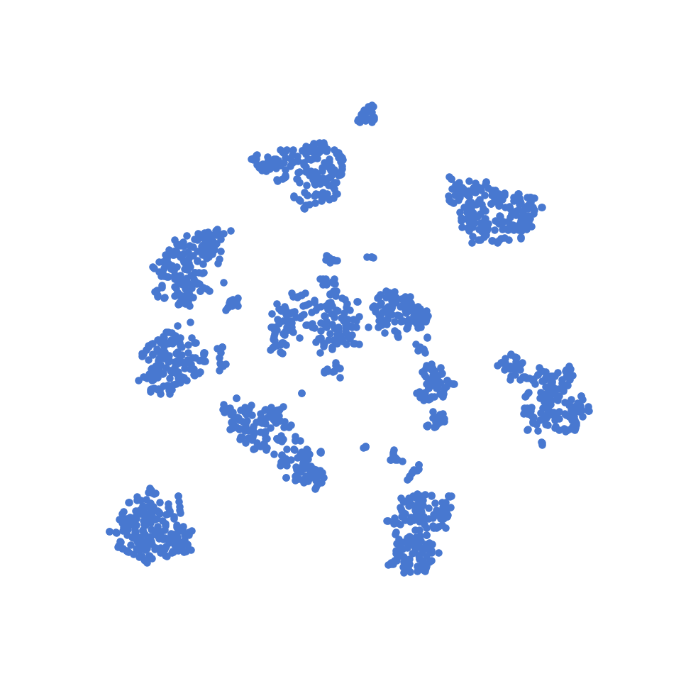
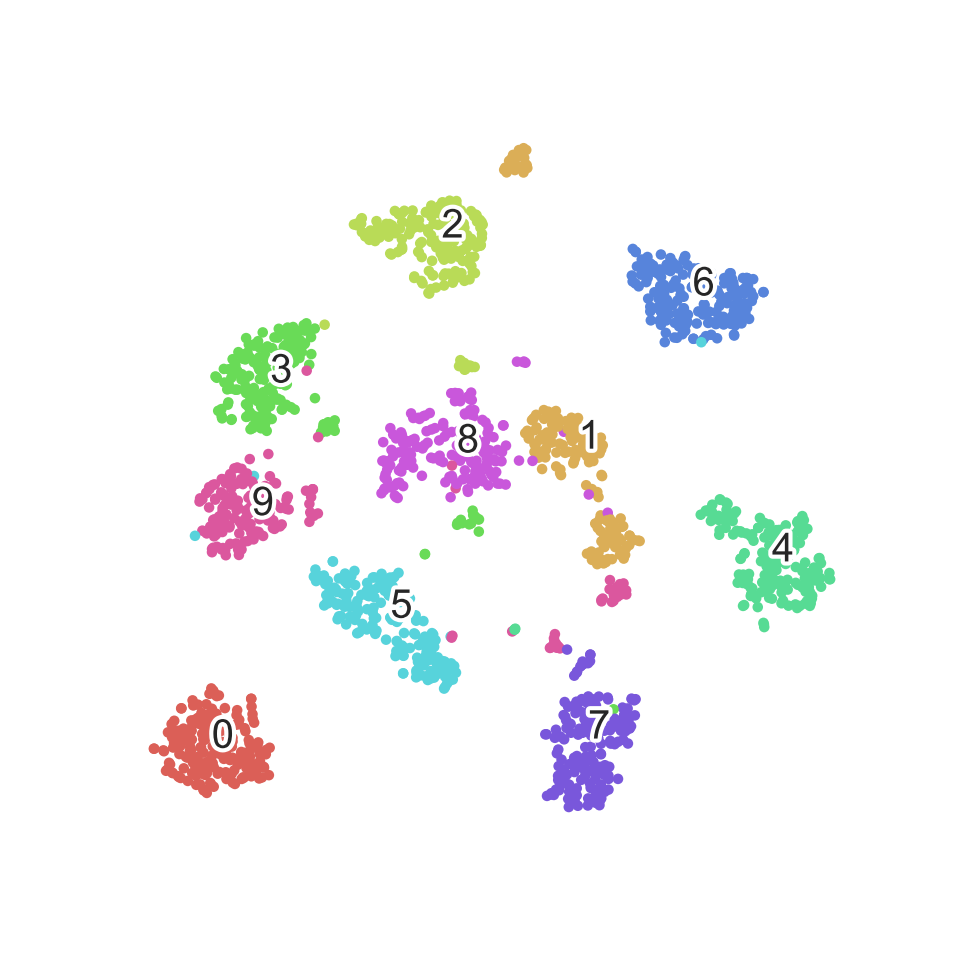
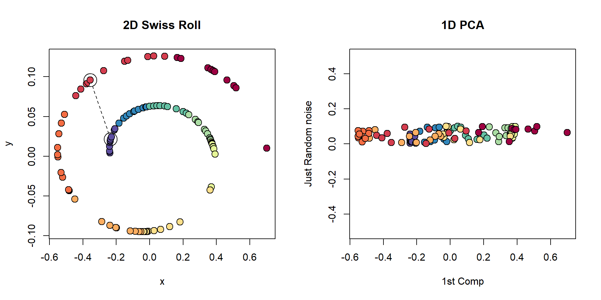
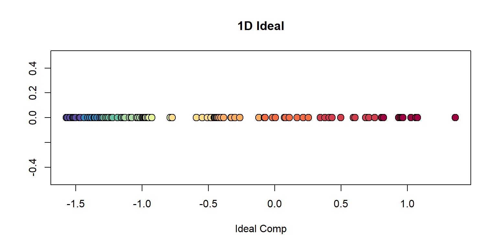
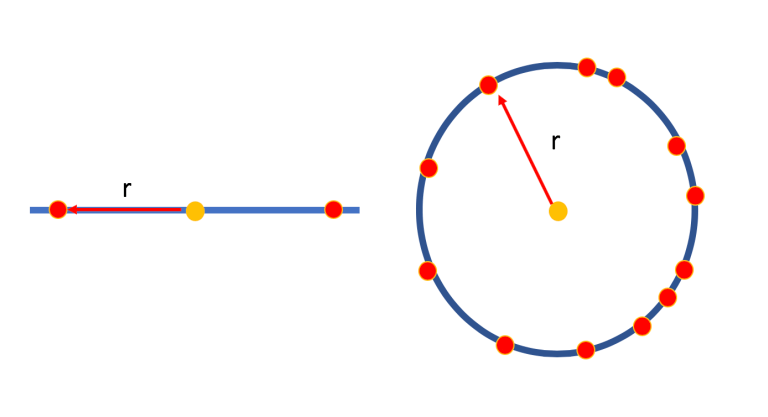
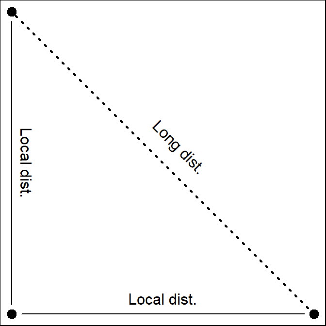
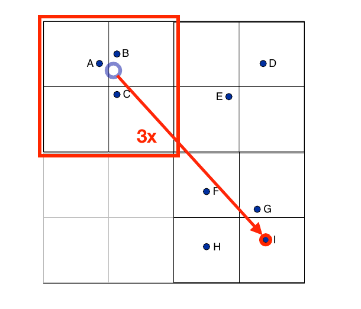
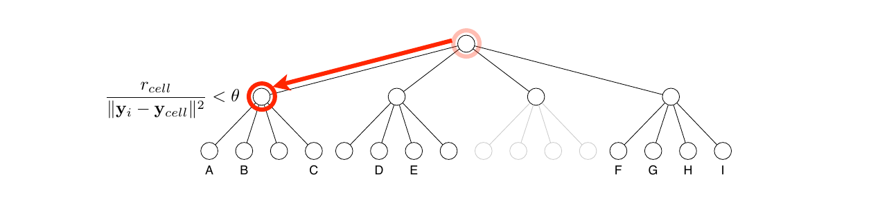
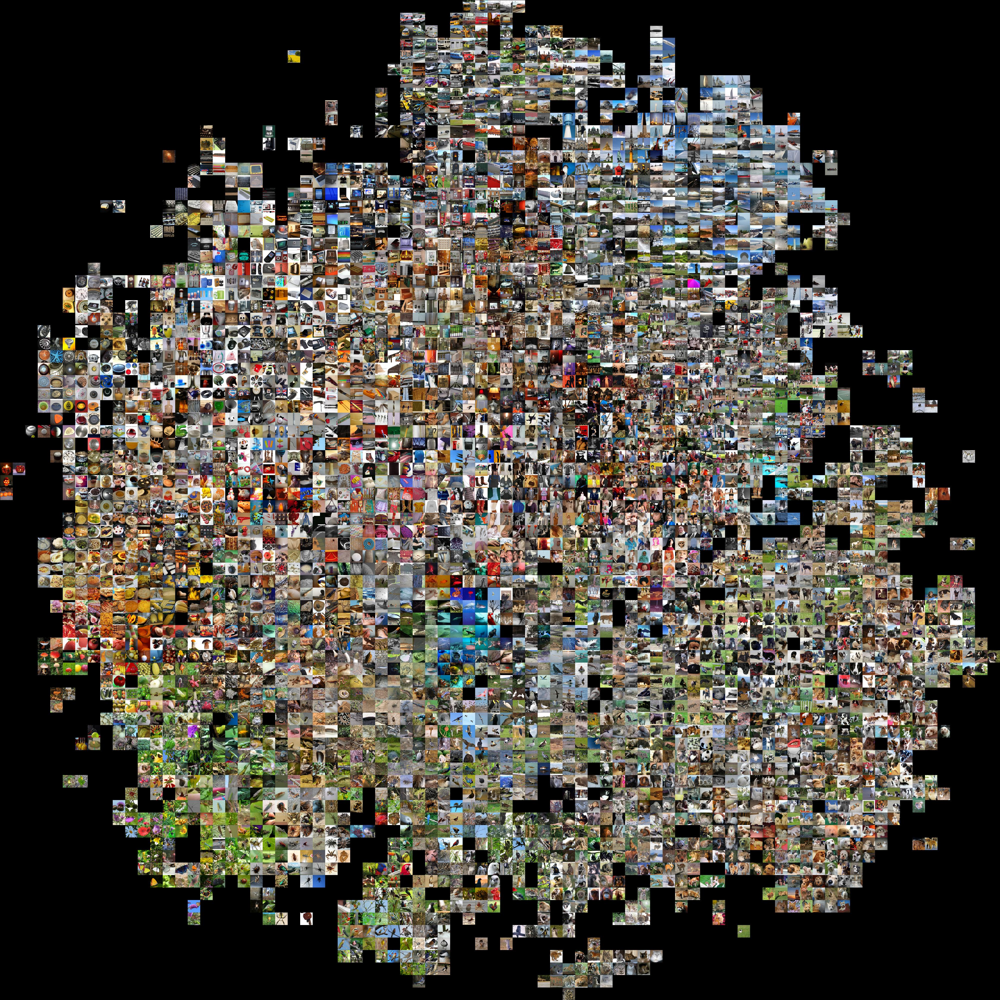

t-SNE: A way to Visualize Multidimensional Dataset
Subhrajyoty Roy
Mentor: Dr. Ayanendranath Basu, ISRU
Date: 13th December, 2019
Introduction
t-SNE (t distributed Stochastic Neighbour Embedding) is an unsupervised non-linear projection / dimension reduction technique.
Greatly used for visualizing multidimensional data nowadays, i.e. projecting hundreds of dimensions only to 2D or 3D, so that some pattern persists.
t-SNE has been used for visualization in a wide range of applications, including computer security research, music analysis, text analysis, cancer research, bioinformatics and biomedical signal processing.
t-SNE on MNIST dataset
Let’s first look at how t-SNE performs on MNIST dataset.

- 60,000 handwritten digits from 0 to 9.
- Black & White 28x28 images.
- Represented by 784 dimensional vectors.
t-SNE on MNIST dataset (Contd.)
Due to limited resource, tSNE is applied on a random subset of MNIST dataset, having only 6000 samples. Without any supervised information about the actual digits, from the vectors alone it learned some clusters in the dataset.

t-SNE on MNIST dataset (Contd.)
t-SNE can identify the clusters in unsupervised way and can project the 784 dimensional data only onto 2 dimensions retaining the structure.

Problem Formalization
We have a dataset \(X_1, X_2, \dots X_n\) where each \(X_i \in \mathbb{R}^d\) where \(d\) is considerably high. It is often the case that these datapoints, actually lie in a lower dimensional manifold. These \(X_i\)’s are elements of feature space (input space).
We want to have their representations \(Y_1, Y_2, \dots Y_n\) where each \(Y_i \in \mathbb{R}^p\), where \(p\) usually is 2 or 3 (since we want to visualize). This \(Y_i\)’s are elements of the embedded space.
\(X_i\) and \(Y_i\) should be related in some way, so that \(Y_i\) is a very accurate representation of \(X_i\) in terms of its position in the manifold.
What is a good representative?
Euclidean distance vs The distance through the manifold.

What is a good representative?
Ideal visualization would be;

Idea is to preserve the local distances, but not the global ones.
Stochastic Neighbour Embedding
For each datapoint \(X_i\), define \[p_{j|i} \propto \exp\left( -\frac{\Vert X_i - X_j\Vert^2}{2\sigma_i^2} \right) \quad \forall j = 1, 2, \dots n; j\neq i\]
Define \(p_{i|i} = 0 \quad \forall i = 1, 2, \dots n\).
\(p_{j|i}\) can be interpreted as the likelihood that datapoint \(X_i\) would pick datapoint \(X_j\) as its neighbours if neighbours are picked according to a Gaussian distribution centered at \(X_i\).
Even if all variables are not quantitative, as long as a similarity between two datapoints can be defined, they can be scaled to obtain \(p_{j|i}\).
Note that \(p_{i|j}\) and \(p_{j | i}\) are different because of different normalization factors.
Stochastic Neighbour Embedding
- Similarly define \(q_{j|i}\) as the analogus probabilistic similarities in embedded space.
\[q_{j|i} \propto \exp\left( -\Vert Y_i - Y_j\Vert^2 \right) \quad \forall j = 1, 2, \dots n; j\neq i\]
Note that, \(\sigma_i\)’s are different in feature space for each datapoint \(X_i\). This is chosen such that, for each datapoint \(X_i\), the ball centered at \(X_i\) of radius \(\sigma_i\) contains approximately same number of other datapoints. This is obtained through fixing the Perplexity of the Gaussian distributions to a fixed quantity.
Intuitively, for dense regions in feature space, we set low \(\sigma_i\), and for sparse regions we set high \(\sigma_i\).
Stochastic Neighbour Embedding
If \(Y_i\)’s accurately represents its higher dimensional analogue \(X_i\), then; \[P_i = \left( p_{1|i}, \dots p_{(i-1)|i}, p_{(i+1)|i}, \dots p_{n|i} \right) \\\approx \left( q_{1|i}, \dots q_{(i-1)|i}, q_{(i+1)|i}, \dots q_{n|i} \right) = Q_i\]
So, we can wish to minimize Kullback-Leibler divergence between \(P_i\) and \(Q_i\) for each datapoint \(X_i\).
Consequently, we wish to minimize, \[C = \sum_{i = 1}^{n} KL\left( P_i \Vert Q_i \right) = \sum_i\sum_j p_{j|i}\log\left(\frac{p_{j|i}}{q_{j|i}}\right)\] with respect to \(y_i\)’s, the points in the embedded space.
No unique minima of the cost function. Any rotation of embedded space would work, as they preserve distances.
Why KL Divergence (Reason 1)
KL Divergence is asymmetric.
- If two points \(X_i\) and \(X_j\) are close, \(p_{j | i}\) is high, causing more penalty for small choice of \(q_{j|i}\) (or distant \(Y_i\) and \(Y_j\)). Therefore, two close datapoints in feature space would not be represented by distant points in embedded space.
- Converse is not true.
- If two points \(X_i\) and \(X_j\) are distant, \(p_{j | i}\) is very low, thereby reducing the contribution of \(q_{j|i}\) in the cost function.
Why KL Divergence (Reason 2)
Gradient function is fairly simple.
- We minimize the cost function using Newton Raphson, Gradient Descent method.
- Using Kullback Leibler divergence makes the form of the gradient simpler. \[\frac{\partial C}{\partial y_i} = 2\sum_{j\neq i} (p_{j|i} + p_{i|j}-q_{j|i}-q_{i|j})(y_i - y_j)\]
- Fix a point \(y_i\) in embedded space. For each datapoint \(y_j\), consider there is a spring between \(y_j\) and \(y_i\) that exerts force proportional to difference in the corresponding probabilities. All such forces add up to tell where to move \(y_i\) in next iteration.
Crowding Problem

Higher dimension can have more points at small distances, while low dimension would not be able to accomodate all such points in their accurate positions.
Due to minimization of each \(KL(P_i\Vert Q_i)\), all such points would try to remain as close as possible in embedded space, thereby creating very dense clusters. Vital information about shape of the cluster may be gone.
Symmetric SNE
Could avoid the Crowding Problem by modelling \(p_{ij}\)’s jointly, rather than modelling conditional \(p_{j|i}\)’s. Since, the cost function would not have many KL divergences each of which would try to get minimized independent of others.
Here, we have; \(p_{ij} \propto \exp\left( -\frac{\Vert X_i - X_j\Vert^2}{2\sigma_i\sigma_j} \right)\)
Cost function becomes; \(C = \sum_i \sum_j p_{ij}\log\left( \frac{p_{ij}}{q_{ij}} \right)\)
The gradient gets simplified further; \(\frac{\partial C}{\partial y_i} = 4\sum_{j\neq i} (p_{ij}-q_{ij})(y_i - y_j)\)
Symmetric SNE (Outlier Problem)
- The position of an outlier is not well determined in the embedded space.
- Let \(X_1\) be an outlying datapoint. Then, each of the distance \(\Vert X_1 - X_2\Vert, \Vert X_1 - X_3\Vert, \dots \Vert X_1 - X_n\Vert\) are large.
- Hence, all of \(p_{12}, p_{13}, \dots p_{1n}\) are small.
- Hence, the effect of the outlying datapoint \(X_1\) is very small in the cost function.
Remedies
- Mix with Uniform noise. But it complicates the simple form of gradient.
\[p'_{ij} = (1-\rho)p_{ij} + \rho \frac{1}{2n(n-1)} \]
- Consider symmetrized conditional probabilities.
\[p_{ij} = \frac{p_{j|i} + p_{i|j}}{2n}\]
Note that, \(\sum_j p_{ij} > \frac{1}{2n}\).
Building t-SNE

- The distance between \((0, 1)\) and \((1, 0)\) is \(\sqrt{2}\). But, if we accurately represent those points preserving local distances in 1D embedded space, the distance must increase to 2.
Building t-SNE (Contd.)
Assume, \(\sqrt{2}\) distance in feature space would give \(p_{ij} = 0.1\). Then, the minimization of cost would yield \(q_{ij} \approx 0.1\), which should correspond to higher distance of \(2\).
Therefore, we need some heavy tail distribution. Maybe Cauchy (t with \(1\) d.f.).
Take \(q_{ij} \propto \left( 1 + \Vert Y_i - Y_j \Vert^2 \right)^{-1}\).
Gradients becomes; \[\frac{\partial C}{\partial Y_i} = 4 \sum_{j\neq i} (p_{ij} - q_{ij})\left( 1 + \Vert Y_i - Y_j \Vert^2 \right)^{-1} (Y_i - Y_j)\]
Visualization of full MNIST
Check here for full image.

Visualization of Normal Mixture
- Simulated dataset containing samples from \(3\) different \(10\)-variate normal distributions.
- Each of them with covariance matrix \(\sigma I_{10}\), but with different sigmas.
- One with mean \(\mu = 0\), another with mean vector with all components as small positive number (between \(0\) to \(3\)), and the other with a mean vector with all components as small negative numbers (between \(-3\) to \(0\)).
- The classes were imbalanced. That is, there were about \(500\) samples from 1st population of normal, about \(200\) from 2nd population and \(50\) from 3rd one.
Visualization of Normal Mixture
Click here if you cannot watch the animation.

Visualization of Real Data
- Wisconsin Breast Cancer dataset contains \(569\) patients data on \(32\) variables related to breast cancer, and the true label whether the tumor was benign or malignant.
- Features are computed from a digitized image of a fine needle aspirate (FNA) of a breast mass. They describe characteristics of the cell nuclei present in the image.
- Input to t-SNE was just \(32\) features as a \(32\) length vectors for each patients. The labels are only used to annotate the plot.
- Red datapoints mean truly malignant in nature.
Visualization of Real Data
Click here if you cannot watch the animation.

3 Phases of Optimization
- Previous animation shows 3 clear phases of optimization.
- At the initial stage, all \(Y_i\)’s are clustered close to the origin of embedded space.
- Reason is, for first few iterations, an \(L_2\) penalty term (like ridge regression) is added to the cost function. Hence, we have; \(C_{new} = KL(P\Vert Q) + \lambda\sum_i \Vert Y_i \Vert^2\)
- For the datapoints, for which \(p_{ij}\)’s are very small, due to t-distribution, those points in the embedded space would be distant. However, it there are many such pairs, then cost minimization without the \(L_2\) penalty term, would repel most of the points distant from the origin at first few iterations. This may affect the local distances and the algorithm would be stuck at a local optima. An \(L_2\) restriction would keep them in check for some iterations to explore more global possibilities.
3 Phases of Optimization
- The clusters seems to distinguish itself from other clusters, but lot of erratic movement within clusters.
- Early exaggeration multiplies all \(p_{ij}\)’s by \(\alpha > 1\), which makes \(\sum_i \sum_j p_{ij} = \alpha > 1\). Clearly, no \(q_{ij}\)’s would be enough to represent \(p_{ij}\)’s as \(\sum_i\sum_j q_{ij} = 1\) and they are too much small to model respective \(p_{ij}\)’s.
- As a result, the optimization is encouraged to focus on modeling the large \(p_{ij}\)’s by fairly large (or even larger) \(q_{ij}\)’s, as the penalty is too high.
- The effect is that the natural clusters in the data tend to form widely separated clusters in the embedded space.
- However, since very small (local) distances are not modelled correctly, they tend to move erratic for some iterations.
3 Phases of Optimization
Phase 3 (Complete Visualization)
- The parameter \(\alpha\) from Early exaggeration is brought down to \(1\) little by little.
- As a result, wide seperated clusters now try to focus on intra-cluster differences. The movement of points in embedded space gradually comes to a stable position.
- Finally, we have a complete visualization of the natural clusters in multidimensional data.
More Examples 1
Left: Original Image; Right: t-SNE Output
More Examples 2

Left: Original Image; Right: t-SNE Output
More Examples 3
Left: Original Image; Right: t-SNE Output
Pros
- Helps us visualizes the structure of the data and determine the course of analysis seemingly.
- Helps us in understanding whether local distances (or the similarity measure based on which \(p_{ij}\)’s are constructed) are well enough to seperate the clusters.
- Fairly robust in the sense that outlying datapoint stays as an outlier in the embedded space, since t-distribution will strech the large distances further away.
- Applies to categorical, nominal variables as well, as long as there is a similarity measure which can be transformed into a probability like measure.
Cons
Need to compute \(q_{ij}\)’s based on new position of \(Y_i\)’s for each iteration. This requires \(O(n^2)\) computation for each iteration which is huge for large datasets (used in biology).
It would have been extremely good if we could use t-SNE to classification problem, an approach would be to project higher dimensional space into the embedded space where we could simply see & define a function which could give rise to a classification function. But, t-SNE is nonparametric, hence given a new test datapoint, we just do not know its position in the embedded space.
Barnes-Hut Approximation

- \(\Vert Y_I - Y_A\Vert \approx \Vert Y_I - Y_B\Vert \approx \Vert Y_I - Y_C\Vert\). Therefore, \(q_{IA} \approx q_{IB} \approx q_{IC}\).
Let, \(Y_0\) is the center of the cell where \(Y_A, Y_B, Y_C\) belongs. Then, can approximate \(q_{IA} \propto \exp\left( -\Vert Y_I - Y_0\Vert^2 \right)\).
Use a quadtree or octtree to perform this in an efficient manner.
Barnes-Hut Approximation

- Break the whole embedded space into grids recursively into \(4\) parts (or \(8\) parts in 3D) until all the points lie in separate grid cells.
- Store centers of each grid cell in a quadtree (or an octtree in 3D).
- When computing gradient \(\frac{\partial C}{\partial Y_i}\) ,Perform a depth first search on the tree. At each level, asks the questions;
- Is the cell small enough (\(r_{cell}\) is the length of diagonal of the cell)?
- Is the cell distant enough from \(Y_i\)?
- If both are yes, then merge those points inside the cell and go to upper level for further reduction.
- If not, then apply Barnes Hut approximation in current level.
Visualization of Imagenet Database
- The ImageNet project is a large visual database designed for use in visual object recognition software research. More than 14 million images have been hand-annotated by the project to indicate what objects are pictured.
- ImageNet contains more than 20,000 categories with a typical category, such as “balloon” or “strawberry”, consisting of several hundred images.
- Clearly, applying t-SNE naively would take days to complete. But, with Barnes-Hut approximation, it takes about an hour to complete.
- The images are plotted instead of the embeddded points. To make the most out of it, only a few hundreds are shown on the plot.
Visulization of Imagenet Database
Check here for full image.

Multiple Maps t-SNE
- Let’s say we are plotting datapoints representing english words, with \(p_{j|i}\) interpreted as the probability that the word \(X_j\) is followed by word \(X_i\) in the corpus.
Hello, I am Subhrajyoty. \(\qquad\) Hi, I am Subhrajyoty.
- Hello and Hi mean same thing as they share same neighbours.
- Consider the word Bank and River. They should have less distance in embedded space.
- Consider the word Bank and Money. They should have less distance in embedded space.
- The words River and Money should have less distance in embedded space by triangle inequality.
Multiple Maps t-SNE
- Use more than 1 maps, i.e. use a series of embedding maps to understand complex sturcture of language.
- Consider; \[q_{ij} \propto \sum_m \pi_i^{(m)} \pi_j^{(m)} \left( 1 + \Vert Y_i^{(m)} - Y_j^{(m)} \Vert^2 \right)^{-1}\]
- Model the weights of importance as \[\pi_{i}^{(m)} = \frac{e^{-w_i^{(m)}}}{\sum_{m'} e^{-w_i^{(m)}}}\] with \(w_i^{(1)} = 0\).
Due to increasing number of parameters, limit the number of maps to \(3\).
Measure quality using Neighbourhood Preservation Ratio. The ratio of number of nearest neighbours in feature space which were preserved as nearest neighbours in embedded space also.
Example of Multiple Maps t-SNE on Real Dataset
Left: Map 1; Right: Map 2
\(\gamma\)-spherical and \(\gamma\)-separable clusters
Defn. Let \(X\) be a dataset with clusters (or partitions) \(C_1, C_2, \dots C_k\) with \(|C_i| \geq 0.1 \frac{n}{k}\).
- They are \(\gamma\)-spherical if for some constant \(b_1, b_2, \dots b_k > 0\),
- For any \(X_i, X_j \in C_l; \Vert X_i - X_j\Vert^2 \geq \frac{b_l}{1 + \gamma}\).
- For any \(X_i\), there are atleast \(50\%\) points of the same cluster which lie within \(b_l\) distance from it.
- They are \(\gamma\)-separable if for some constant \(b_1, b_2, \dots b_k > 0\),
- For any \(X_i \in C_l\) and \(X_j \in C_{l'}\) in different clusters, \(\Vert X_i - X_j \Vert^2 > (1 + \gamma \log n)\max\left(b_l, b_{l'}\right)\)
\((1-\epsilon)\)-Visualization
Defn. Let \(Y\) be the datapoints in 2D embedded space of the datapoints \(X\). If there is a partition \(P_1, P_2, \dots P_k, P_{err}\) such that;
- \(| P_i \Delta C_i| \leq \epsilon |C_i|\) for all \(i = 1, 2, \dots k\)
- \(|P_{err}| \leq n\epsilon\)
If \(\epsilon = 0\), we say the embedding is a full visualization.
Theoretical Result
- No proper theoretical results till \(2017\), since the optimization problem was not convex.
- In \(2017\) and \(2018\), some analysis for 2D t-SNE based on Dynamical Systems and Differential Equations was proposed.
Let, \(X\) be a \(\gamma\)-spherical and \(\gamma\)-separated dataset with \(k < n^{1/5}\) and the early exaggeration phase uses an \(k^2\sqrt{n}\log n < \alpha < n\). Then, for any \(\epsilon > 0\), there exists a constant \(C(\epsilon, \gamma) < \infty\) such that with probability at least \((1-\epsilon)\) over the choice of initial position of datapoints in embedding space, after \(C(\epsilon, \gamma)\frac{n \log n}{\alpha}\) iterations, it leads to a full visualization.
Future Scopes
- No theoretical result for 3D or higher dimension.
- Develop a parametric framework for t-SNE, which can be used to develop a classification technique.
- t-SNE preserves local distances, but changes the global shape of data. Can we retain both using Multiple maps?
References
- Laurens van der Maaten’s website
- L.J.P. van der Maaten and G.E. Hinton. Visualizing High-Dimensional Data Using t-SNE. Journal of Machine Learning Research 9(Nov):2579-2605, 2008
- L.J.P. van der Maaten. Learning a Parametric Embedding by Preserving Local Structure. In Proceedings of the Twelfth International Conference on Artificial Intelligence & Statistics (AI-STATS), JMLR W&CP 5:384-391, 2009
- L.J.P. van der Maaten and G.E. Hinton. Visualizing Non-Metric Similarities in Multiple Maps. Machine Learning 87(1):33-55, 2012.
- L.J.P. van der Maaten. Accelerating t-SNE using Tree-Based Algorithms. Journal of Machine Learning Research 15(Oct):3221-3245, 2014.
- U. Shaham, S. Steinerberger. Stochastic Neighbor Embedding separates well-separated clusters, 2017.
- S. Arora, W. Hu, P. K. Kothari. An Analysis of the t-SNE Algorithm for Data Visualization, 2018.
- George C. Linderman and Stefan Steinerberger. Clustering with t-SNE, Provably. SIAM Journal on Mathematics of Data Science 1(2), 313–332, 2018.